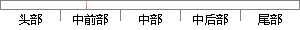

，是世界上最好的钢铁强度的100多倍，
片段位置图

相似结果
相似片段：
变形，从而使碳原子不必重新排列来适应外力，也就保持了结构稳定。科学家已经证实了石墨烯是目前世界上已知的强度最高的材料，比钻石还坚硬，是世界上最好的钢铁强度的100多倍。瑞典皇家科学院在颁发2010年诺贝尔物理学奖时曾这样比喻：“利用单层石墨烯制作的吊床可以承载一只4千克的兔子”。有人这样引申说，由于石墨
| 对比库： | WriteCheck云资源库 |
| 来源： | ftipc.org.cn 查看来源 |
| 发布时间： | 2013-08-28 |
| 相似率 | 100% （严重抄袭） |